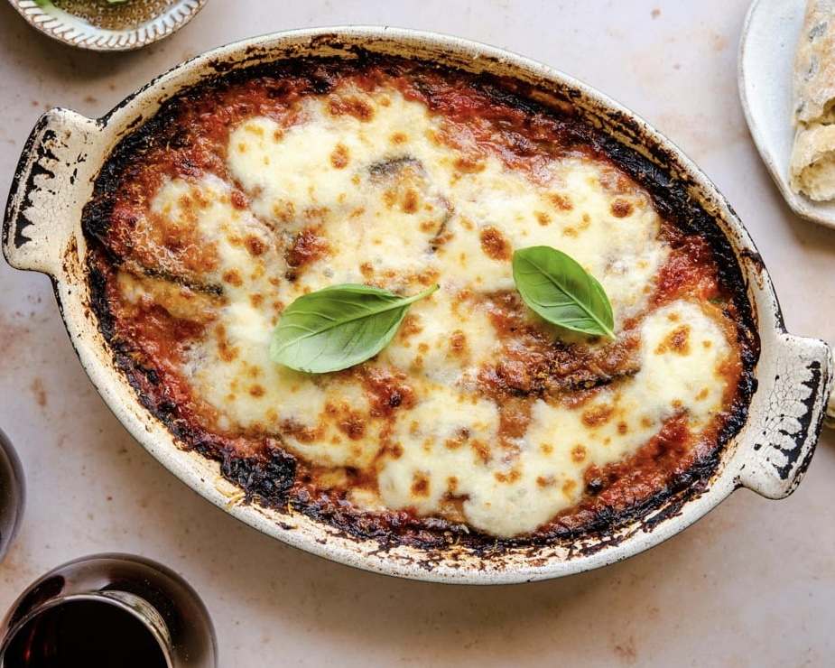

INGREDIENTS:
- 2 medium eggplants, cut into 1/2-inch-thick round slices
- Salt, as needed, plus 1 tablespoon
- 5 cups of fresh breadcrumbs
- 1 tablespoon of dried oregano
- 1 tablespoon of dried thyme
- Freshly ground black pepper
- Vegetable oil for frying
- All-purpose flour for dredging
- 6 large eggs, beaten
- 2 tblsp of whole milk
- Olive oil, as needed
- 7 cups of marinara sauce
- 2/3 cup of grated Parmesan, divided
- 1 pound fresh mozzarella, thinly sliced
PROCEDURE
- Start by arranging the eggplant slices on several baking sheets, then sprinkle them with salt.
- Set this aside for an hour so that the bitter juices weep from the vegetable.
- When this is done, rinse the eggplant using a colander under cold water.
- Dry it with paper towels.
- In a large bowl, whisk together the 1 1/2 teaspoons salt, breadcrumbs, oregano, thyme, and pepper.
- In a bowl, whisk the egg and milk together.
- Dredge an eggplant slice in the flour, then dip it in the egg, and finally dredge it in the breadcrumb mixture.
- Shake off any excess breading and transfer the eggplant to a baking sheet.
- Repeat with the remaining eggplant.
- In a large straight-sided skillet, pour the oil to a depth of 1/2 inch.
- Heat the oil over medium heat until it registers 400 degrees F on a deep frying thermometer.
- Now start frying the eggplant slices, turning once until golden brown. (approximately 3 minutes)
- Using tongs, transfer to a paper towel-lined baking sheet and season with salt to taste.
- Lightly brush a baking dish with olive oil, then cover it with 1/3 of the marinara sauce and arrange half of the eggplant over the sauce.
- Cover the eggplant with another 1/3 of the sauce. Scatter half of the Parmesan and half of the mozzarella over the sauced eggplant.
- Bake at 400 degrees F until hot and just beginning to brown, (about 30 minutes).
- Done!
- Serve immediately.